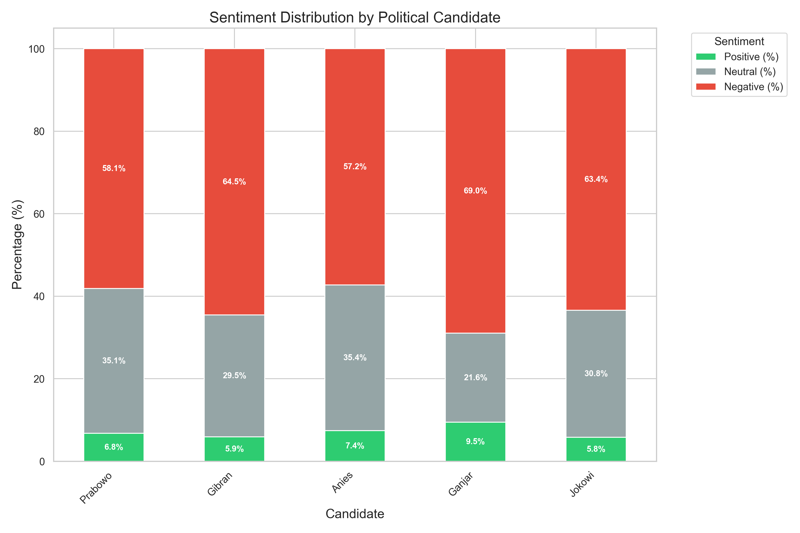
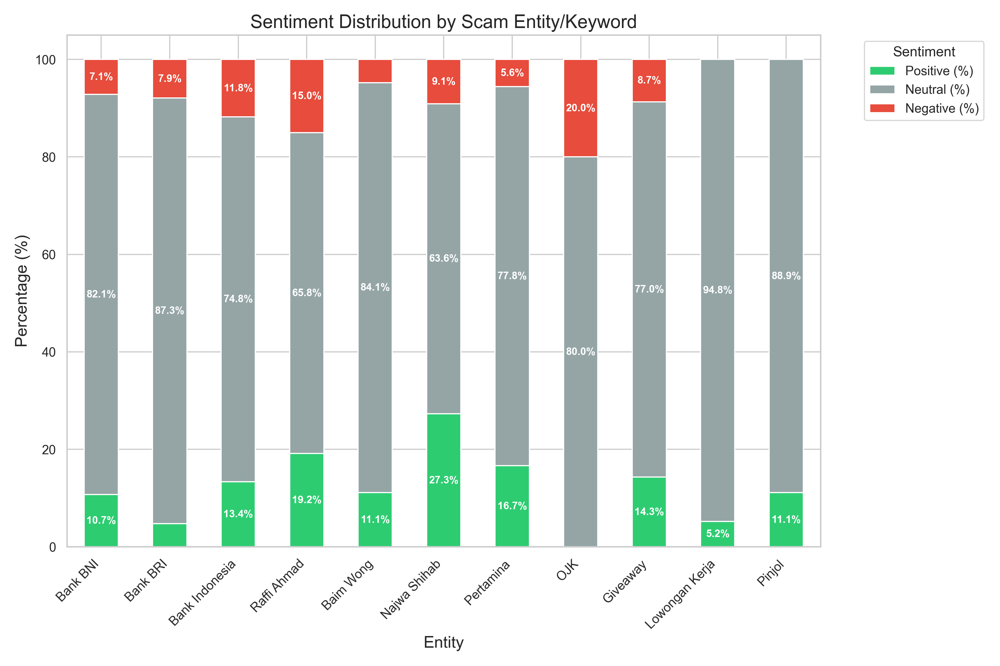
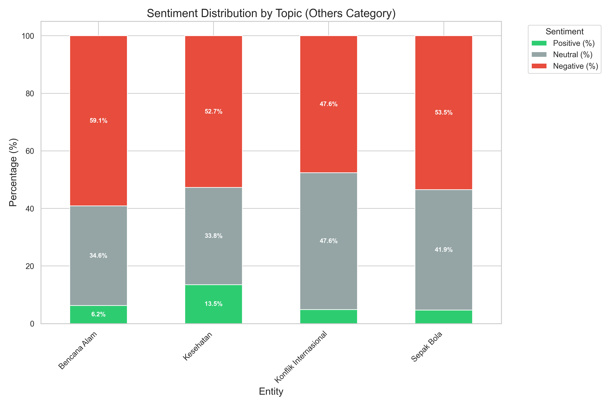

1. Overview of the Dataset
This analysis focuses on a dataset of hoax articles and debunking reports collected from
turnbackhoax.id, a prominent Indonesian fact-checking website. The data covers the
period of January to December 2024, providing a comprehensive view of misinformation
trends throughout the year.
The dataset was categorized into three main buckets using Large Language Models (LLM):
- Politics Hoaxes related to political figures, parties, and
the election process.
- Scam Fraudulent schemes, fake giveaways, job scams, and
financial fraud.
- Others A broad category encompassing natural disasters,
health misinformation, international conflicts, and entertainment news.
The primary text used for analysis is the HOAX_TEXT column, which contains the content of
the hoax or the debunking explanation.
2. Methodology
To understand the emotional tone and sentiment associated with different entities and topics, we employed
a Natural Language Processing (NLP) pipeline:
2.1. Sentiment Analysis Model
We utilized a pre-trained deep learning model specifically fine-tuned for the Indonesian language:
- Model:
w11wo/indonesian-roberta-base-sentiment-classifier
- Architecture: RoBERTa (Robustly optimized BERT approach) base model.
- Task: Sequence Classification (Sentiment Analysis).
- Labels: Positive, Negative, Neutral.
2.2. Entity and Topic Extraction
We defined specific dictionaries of keywords to identify relevant entities and topics within the text.
This allowed us to correlate sentiment with specific subjects.
- Politics: Keywords for candidates (e.g., "Prabowo", "Anies", "Ganjar", "Jokowi").
- Scam: Keywords for banks (BNI, BRI), celebrities used in scams (Raffi Ahmad, Baim
Wong), and scam types (Giveaway, Loker).
- Others: Keywords for broad topics (Disasters, Health, International Conflict,
Football).
2.3. Aggregation
For each entity/topic, we calculated the distribution of sentiment labels (Positive, Negative, Neutral)
based on the texts where they were mentioned.
3.1. Politics Category
The political category was dominated by negative sentiment, which is expected for hoax content targeting
political rivals during an election period.
Sentiment Distribution by Candidate
| Candidate |
Total Mentions |
Positive (%) |
Negative (%) |
Neutral (%) |
| Prabowo |
559 |
6.8% |
58.1% |
35.1% |
| Gibran |
471 |
5.9% |
64.5% |
29.5% |
| Anies |
297 |
7.4% |
57.2% |
35.4% |
| Ganjar |
116 |
9.5% |
69.0% |
21.6% |
| Jokowi |
396 |
5.8% |
63.4% |
30.8% |

Key Findings
- High Negativity: All candidates faced predominantly negative sentiment (>57%).
- Ganjar Pranowo received the highest proportion of negative sentiment (69.0%).
- Prabowo and Anies had a relatively higher share of neutral sentiment (~35%),
possibly due to more factual reporting or neutral debunking narratives.
3.2. Scam Category
The scam category showed a distinctly different pattern, characterized by a dominance of
Neutral sentiment.
Sentiment Distribution by Entity
| Entity/Keyword |
Total Mentions |
Positive (%) |
Negative (%) |
Neutral (%) |
| Bank Indonesia |
322 |
13.4% |
11.8% |
74.8% |
| Giveaway |
161 |
14.3% |
8.7% |
77.0% |
| Raffi Ahmad |
120 |
19.2% |
15.0% |
65.8% |
| Lowongan Kerja |
96 |
5.2% |
0.0% |
94.8% |
| Najwa Shihab |
11 |
27.3% |
9.1% |
63.6% |

Key Findings
- Neutral Tone: Scams often mimic official, professional language (e.g., job
offers, bank announcements) to appear legitimate, resulting in high neutral scores.
- "Lure" Positivity: Celebrities like Najwa Shihab and
Raffi Ahmad have higher positive sentiment scores. This reflects the use of
their image as "bait" in giveaways, where the text promises rewards and benefits.
- Low Negativity: Unlike political attacks, scam texts are designed to entice,
not to criticize, hence the lower negative sentiment.
3.3. Others Category
This category is diverse, but certain topics elicit strong negative emotions similar to the political
category.
Sentiment Distribution by Topic
| Topic |
Total Mentions |
Positive (%) |
Negative (%) |
Neutral (%) |
| Bencana Alam |
208 |
6.3% |
59.1% |
34.6% |
| Kesehatan |
148 |
13.5% |
52.7% |
33.8% |
| Konflik Internasional |
124 |
4.8% |
47.6% |
47.6% |
| Sepak Bola |
86 |
4.7% |
53.5% |
41.9% |

Key Findings
- Distress and Negativity: Natural Disasters (Bencana Alam) have
the highest negative sentiment (59.1%), reflecting the tragic nature of the content (floods,
earthquakes).
- Sports Controversy: Football (Sepak Bola) also shows high
negativity (53.5%), likely driven by hoaxes about cheating, unfair referees, or riots.
- Balanced Conflict: International Conflict shows an equal split
between Negative and Neutral, suggesting a mix of grim war reporting and factual updates.